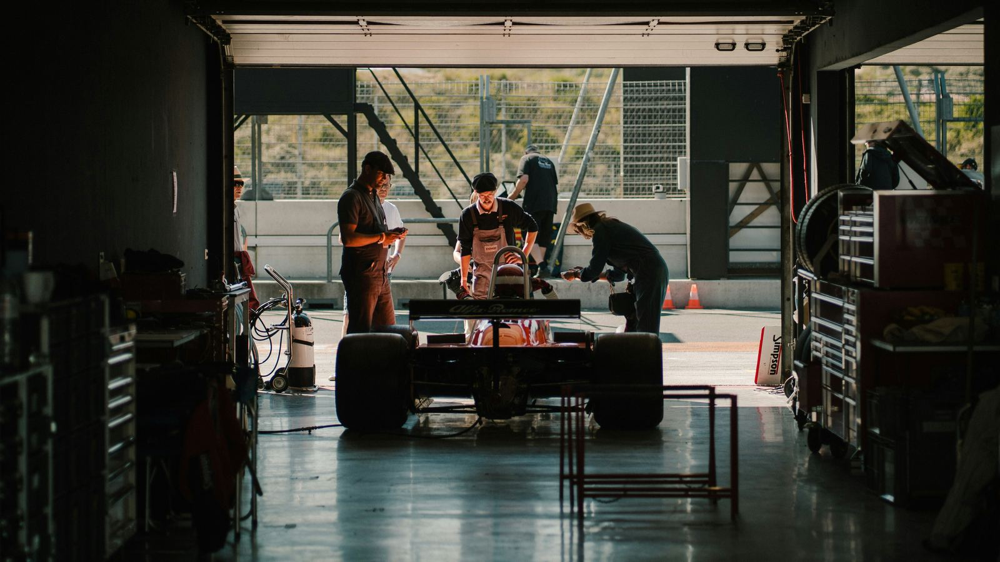

Quiénes somos: Racer 1, la guía para aprender Fórmula 1 desde cero
Racer 1 nació como un proyecto para acercar la Fórmula 1 a nuevos aficionados, explicando de forma clara y ordenada cómo funciona este deporte, quiénes lo protagonizan y por qué genera tanta pasión alrededor del mundo.
Nuestra misión: explicar el reglamento de la F1 sin tecnicismos
Queremos que cualquier persona, sin importar su nivel de conocimiento previo, pueda entender el reglamento de la Fórmula 1, seguir el calendario de carreras y reconocer a las escuderías y pilotos que compiten cada temporada.
Historia, Grandes Premios y pilotos: los temas que explicamos paso a paso
- La historia de la Fórmula 1, desde su primera temporada en 1950.
- Cómo se divide un fin de semana de Gran Premio: prácticas, clasificación y carrera.
- Perfiles breves de las escuderías de F1 y sus pilotos.
- Respuestas a las dudas más comunes de los nuevos aficionados.
Detrás de cada carrera: el trabajo de los mecánicos en el garaje
